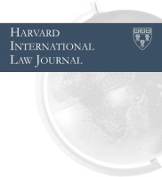
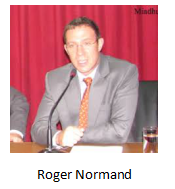

收录于合集
取

作品简介
【作者】 Roger Normand，哈佛大学法学院；Chris af Jochnick，哈佛大学法学院。
【 编译】 朱文菡（国政学人编译员，伦敦大学亚非学院）
【校对】 李雯珲
【审核 】 丁伟航 ****
【排版】 柯晗燕
【 来源 】 Normand, R.; Jochnick, C. (1994). The Legitimation of Violence: A Critical Analysis of the Gulf War. Harvard International Law Journal , 35 (2), 387-416
期刊介绍

哈佛国际法杂志（ Harvard International Law Journal ）是国际法领域最古老、被引用最多的学生编辑期刊，涵盖公私法领域的各种国际问题和主题。基于研究影响力和影响因素，是全球十大最具影响力的法律期刊之一。2017年期刊影响因子为1.38。
暴 力的合法性： **** 对海湾战争的批判性分析
The Legitimation of Violence: A Critical Analysis of the Gulf War

内容提要
本文旨在挑战这样一种广泛认知，即战争法是在限制战争或使战争人性化。本文追溯了海湾战争期间战争法的发展，并主张由于战争法将人道主义规范置于军事必要性的从属地位，致使战争法实际上是在服务于战时暴力的合法化，而非限制暴力。
作为本系列的第二篇文章，在前文分析了海湾战争期间法律是如何使暴力合法化的历史路径后，本文关注点在于海湾战争期间多国部队是如何发展出一套战时法律说辞（legal rhetoric）来为其袭击摧毁民用设施辩护的。战争法事实上应允了为特定军事目标而采取的任何军事行动。在海湾战争前，由于交战国并不能绕过敌军去袭击非军事目标，所以对于“军事目标”的定义是未经检验的。而讽刺的是，海湾战争期间多国部队作为对伊作战中占据绝对主导权的所谓正义之师，可能破坏了阻止战争规模扩大化的法律屏障。
对海湾战争进行分析可以提供使人警醒的一课，即如何用法律使战争人性化同时避免陷入失去法律效力的尴尬境地。法律并不是为暴力背书的。在一个你中有我、我中有你的世界要实现全球安全与繁荣，我们需要对战争法进行改革，使其服务于它本应服务的目标，即保持军事必要性和人道主义之间的合理平衡。
**
** 文章导读
一、 海湾战争和战争法 ****
1.1 背景
1990年8月2日，时任伊拉克总统萨达姆入侵科威特，并声称科威特是伊拉克第十九个省。此举导致联合国安理会迅速通过决议谴责伊拉克的侵略行为并要求其于1991年1月15日前无条件撤军。在一系列和平解决争端尝试均告失败后，美国联合多国部队于1月16日对伊拉克发动大规模空袭，在空袭39日后进行“100小时”地面作战，恢复科威特主权。
1.2 海湾战争中的军事力量
多国部队对伊作战是史上军事实力最为悬殊的战争之一。得益于尖端科技，美国及其盟友在短时间内实现了速战速决。尽管本文并非军事讨论，但一些事实和数据依然值得注意：多国部队能够使用智能系统定位伊拉克军事和民用设施；出动11万架次空袭，具有无争议的制空权；投下9万余吨军火，是二战以来炮火最密集的战场；相较于伊拉克军队2.5到5万人的战亡，美军在“温和火力”下战死240人。
1.3 海湾战争的法律说辞
多国部队的对外说辞将法律作为海湾战争的合法化工具。时任美国总统老布什动用军事力量获得了联合国的集体批准（congressional approval），多国部队的作战行动也获得了安理会决议的合法授权。更重要的是，多国部队的政治和军队领导人都在反复引用战争法为其对伊作战的正当性辩护。仿佛出于战争法，多国部队对伊拉克无辜平民的罪行就被最大程度地赦免了。由于密集轰炸造成的一小部分直接平民死亡，和由电视实况转播的激光制导武器演出的“外科手术式战争”一道，似乎都在服务于上述观点。由联合国安理会决议授权的前期制裁和随后的军事行动，都加深了一种海湾战争是受法律限制的印象。五角大楼发言人甚至将海湾战争称为“美国打过的最遵守法律的战争”。
多国部队对外说辞企图如同为整场海湾战争辩护那样为一些具体军事行动辩护，以使其更能为美国大众接受。比如，多国部队指挥官Norman Schwarzkopf将军曾言：“伊拉克人的某些非常行动表明他们很清楚我们并不是要袭击非军事目标……因为现在他们把自己的飞机藏在居民区，把他们的指挥部搬进了学校……把军械放在公寓楼顶。我们袭击这些非军事目标的行动是完全符合《日内瓦公约》的。”
无独有偶，前国防部长Richard Cheney也曾在面对美军伙同沙特军队活埋上千名伊拉克士兵的报道时，利用法律言辞闪躲回避，而这些被活埋的伊拉克士兵是正式投降的战俘，这种行动显然是非法的。
在更广的层面来说，多国部队通过强调对区分士兵和平民、军事目标和非军事目标的基本法律原则的服从，即其旨在袭击前者，来为整场海湾战争辩护。
1.4 **** 海湾战争对平民造成的影响
虽然美国主流媒体对此保持缄默、集体失声，但独立媒体对战后伊拉克的纪实却与这场号称以最少平民伤亡为代价的利落的外科手术式战争相悖。独立媒体揭露了多国部队对伊拉克基础设施的系统性摧毁，这些袭击对平民的生命和财产造成了毁灭性打击。与五角大楼声称其仅打击军事目标并“最大程度保留了基本经济基础设施”不同，联合国最初派出的观察团指出，伊拉克整个国家的工业基础都被精心摧毁了，“把一个重度依赖能源和科技的后工业化国家带回了前工业化时代”。除了基础生活遭受破坏，被致病菌群污染的水源和水源传染性疾病蔓延整个伊拉克。一份《新英格兰医学期刊》登载的涉及一万六千名伊拉克儿童样本的调查显示战后疾病和营养不良导致的儿童死亡率急涨至战前的三倍，导致近五万名五岁以下儿童在海湾战争结束后的头八个月死亡。据估计，伊拉克全国战后一年的平民死亡至少十万人。战后维持的制裁不仅阻止了伊拉克基础设施的恢复，也导致食品物价指数飞涨1500%到2000%，并进一步导致平民的营养不良和疾病。
1.5 不必要的摧毁
尽管大量的平民伤亡揭露了多国部队的伪善，但这并不意味着多国部队的军事行动是非法的。被各国授权的军事目标可能“合法地”导致平民伤亡（collateral civilian casualties）。然而，多国部队的空袭行动并非旨在击退伊拉克军队而仅打击军事目标，而是出于政治和经济目的袭击了伊拉克电力系统、石油产业和其他非军事目标。
对特定的非军事目标采取精心毁灭的军事行动，暗示多国部队的空袭除了实现军事目的，还有经济目的。多国部队领导人的公众演讲佐证了这种猜测。负责搜集这些非军事目标清单的空军司令Buster Glosson将军解释称多国部队希望战后在全新政府的统治下重建这些被摧毁的系统。空袭的另一号头部人物John Warden上校勾勒出了在摧毁电力系统和平民伤亡背后的政治考量：“萨达姆不能恢复其电力系统。他需要帮助。如果说多国部队有政治目标的话，那就是‘萨达姆，如果你同意做我们让你做的事，我们可以让懂行的人来帮你们恢复电力供应’”。
《华盛顿邮报》指出，这和过去的战略性战争没有什么不同，五角大楼使伊拉克社会不能正常运转，只是为了实现其在海湾战争中的军事胜利。
本文也注意到海湾战争中许多袭击目标的选择和促使伊拉克从科威特撤军并无关联。因此从袭击目标的选择和面向公众的空袭洗地来看，多国部队真正的战争目标并不在于其在联合国正式通过的目标，而是仅仅针对伊拉克军队本身。
二、 对海湾战争的法律回应 ****
当主流媒体和公众津津乐道于智能导弹并被爱国主义遮蔽了双目，他们并不再质疑多国部队是否为正义之师也就无关紧要了。真正关键的是学术界的默许，尤其是国际法学者对于海湾战争道义成就是符合战争法的这一主张的集体失声。不仅对联合国素来有批判性的人权和人道主义组织的报告认同了多国部队的轰炸是合法的，连了解整体情况的《中东观察》对海湾战争的报告，在分析了法律框架下分析了上百次轰炸并且熟知轰炸对伊拉克电力系统和经济的毁灭性后果的情况下，依然得出了海湾战争整体上是符合法律的结论，甚至认同了多国部队的行动是为了避免平民伤亡。
关注这些对多国部队合法性的广泛共识，并非认为这些国际法律师和人权组织是有意地在曲解战争法的立法目的。这种一方面符合战争法另一方面又带来大规模平民苦难的巧合并非只发生在海湾战争。这只不过是一种持续的历史路径下最近的一个案例。这种路径是基于这样一个现实：战争法尽管有着高尚的言辞，却是为忽视人道主义考量而精心建构的。自古以来在战争中，交战双方都企图用法律来使己方师出有名，从而规避审查。因此海湾战争的教训更多是程度上的而非类型上的：掌握有军事和舆论优势的一方出于保护平民的名义而战，却为了几乎和军事无关的目标而大规模残杀平民。正因如此，多国部队被颂扬为“有史以来最符合法律的战争”。
三、 对战时法（JUS IN BELLO）的最后一击 ****
一方面，多国部队的军事行动不同于过往战争。战争法使几乎任何和打击敌军有关的军事行动都合法化了。正如二战后纽伦堡特别法庭所明确的那样，军事行动在造成不必要的破坏时就是违反战争法的，而所谓不必要的破化就是指与军事胜利无关的破坏。因此，当对柏林和广岛平民的轰炸是旨在使军队投降时，这种行为就被合法化了。然而，多国部队将这一底线又下探了一步：伊拉克平民因与和击败、削弱其军队或使其投降无关的原因而被有意地牺牲了。因此，多国部队对民用设施的袭击引起了两个可能的法律结论：要么是多国部队违反了本就宽容到几乎不可能违反的战争法，要么是多国部队合法地利用联合国决议来使战时袭击必须旨在直接或间接地削弱敌军这一基本禁令失效。
借联合国授权之名暗度陈仓，这种行为在法律上的可能性基于三种假设：一是平民遭受的苦难若和战争的整体目标有关，那就是一个正当的目标；二是军事袭击的合法性不是在于个案的判断，而是对于战争整体目标的累积衡量；三是一个掩盖了战争目的的联合国广泛授权可以把使敌军削弱或投降的目标变得不再重要。事实上，前两点依然如此，而第三点也随着联合国678号决议而掀起热议。
战争法的一大原则就是作战必须针对军队。正如1868年《圣彼得堡宣言》所明确的那样，一个国家在战争中唯一应该实现的合法目标是削弱敌方的军事力量。诉诸战争的权利（Jus ad bellum）正如《联合国宪章》所言，是在根据第51款自卫或第7章集体安全的情况下有节制地使用武力。而美国及其盟友似乎将联合国第678号决议作为军事行动的单独授权使用了。这项协议扩张了第51款自卫行动所允许的范围，变成了在这一地区“维护世界和平和安全”的令箭。正如某位时事评论员所说的，安理会的决议实际上赋予了成员国在1月15日后针对伊拉克采取包括战争在内的任何行动的全权。这符合大众对此项决议的理解。
这些问题也从侧面强调了海湾战争号称“有史以来最符合法律的战争”的讽刺意味。多国部队对出于非军事目的袭击民用设施的合法化，已经打破了战时法为战时军事行动设置的上限。将这种行动变成规则，也许就是对战争法的最后一击。
四、 结论：法律改革的必要性
在提出法律改革建议前，有必要反驳两种认为法律不能限制战争的理论。第一个是“政治现实主义者”，他们认为法律和战争无关，旨在说明法律和政治是绝对矛盾的，来剥离二者间复杂的相互关系。事实是法律确实会影响政治，这既带来问题，也带来希望。国家可以通过遵守法律获益来修正其行为。由于法律规则明确，国家会对违法行为望而却步。
第二个带有误导性的是“决定论的”观念，其主张任何试图控制战争的努力都注定付之东流。法律和战争目前的联系既非必然亦非本质，不过是对一系列特定历史、社会、政治条件的反应。事实是国家已经适应了一种允许其在人道主义限制下采取战争手段的法律框架，当然也不排除国家会选择能够得到新价值或新成果的替代性的法律框架。
4.1 法律改革面临的挑战
尽管有改革的可能性，但海湾战争和本世纪的其他战争还是充分说明了国家能够利用战争法模糊的人道主义原则来避免审查。人权律师不仅应找出现行法律制度的问题，还要探明问题产生的根源何在。这样一个去神秘化的过程就构成了法律改革至关重要的第一步。
法律将公众意识应用于使现行权力关系具象化的争论，必须要调整自由主义者对于法律作为国家进步力量的乐观主义。自由主义法官将法律视为能够影响交战双方的工具，而批判性的观点则增加了法律合法化暴行进而激发暴行的可能性。基于此，对于法律可能产生的影响要做更全面的分析。
与此同时，国际法也是可以塑造国家行为的规范机制。签署一项国际公约不可避免地意味着国家行为受到规范限制。国际法本身就是伴随着各国实力分配的斗争发展的，因此对于挑战和变革也持开放态度。尽管现行战争法产生于军事实践，但主权国家仍然受制于人道主义限制，这种限制也会反过来影响国家的军事行动。将人道主义原则编入法律除了需要国家对此有充分理由支持外，还需要考察原则本身颁布后是否能实现其意图。这种考察反过来又依赖于竞争因素背后力量的持续平衡。
法律改革还要将主权国家体系中的全球化趋势纳入考量。从国际法有迹可循的国家主权的式微，可能导致权力从国家流向国际组织或利益集团。比如国际经济法领域，许多规则服务于独立于国家之外的公司或个人的利益。同样地，人权法和环保法也以部分主权来换回个人和群体的权利。这种弱化国家主权的趋势对于强化限制交战双方出于扩大化的军事必要性残杀平民的国际法体系。同时人权律师也要尽力争取在战时个人和团体权利的最大化。
4.2 反对与回应
本文预计人道主义改革可能遭遇两种异议。一种是有人质疑本文关注点在于强化战争法，而非整个废弃战争。事实上战争法和相互竞争、完全自主的传统国家观之间，并没有多少空间可以主权为代价为个人和团体赋权。一些边际效益可能会在战争法的修修补补中累积，但这相较于战争的整体代价显得苍白无力。尽管这一批评直觉上很有吸引力，但战争似乎在可预见的未来将是国际关系的一大特征。仅关注明天的美好可能，这种非黑即白（all- or-nothing）的方式会忽视今天的挣扎。在挑战国家的战争权利和挑战战争本身之间做选择，展现了不同又互补的方法。
另一种是质疑全球化和主权弱化趋势是否为深化人道主义价值敞开了大门。这种观点将海湾战争视为所谓“新国际秩序”的标志性事件，该秩序指向南北矛盾深化，工业化的发达国家正以并将继续以国际主义之名压榨落后国家。这并非新时代的开启，而是更大规模地重蹈覆辙。确实，人道主义并不一定能在国际主义框架下繁荣，但指出这个可能性并不是企图掩盖其风险。可以想见，军事欺压落后国家的工业化强国的国家利益仍会主导未来国际权力，而这必定伴随着无辜平民的苦难。事实上，正是对这一现实的关怀启发了通过国际法制裁非人道战争的不懈努力。
_ ** _ ** _ ** _ 本文由国政学人独家编译推荐**__
扫下方二维码查看往期精彩
【重磅招募】国政学人学术平台2020年迎新招募重磅开启【方法研究】叶成城
唐世平：基于因果机制的案例选择方法
【博弈模型】威权政体的忠诚-能力权衡和下属的外部选择权 | 国政学人
第290期
【方法研究】比较政治与合成控制丨国政学人
第292期
【新刊速递】第09期| International Relations of Asia-Pacific
Vol.19,No.3
【新刊速递】第10期 | International Studies Review, Volume.21, No.3,
2019
【新刊速递】第11期|Cooperation and Conflict, Vol. 54, No. 4,
2019
【新刊速递】第12期 | International Affairs, Vol.95,
No.6，2019
分类导览 1
分类导览 2

点“在看”给我一朵小黄花